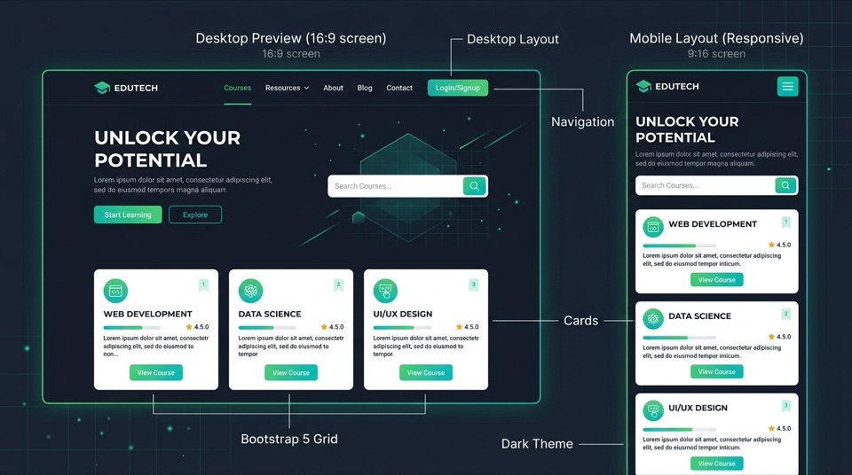
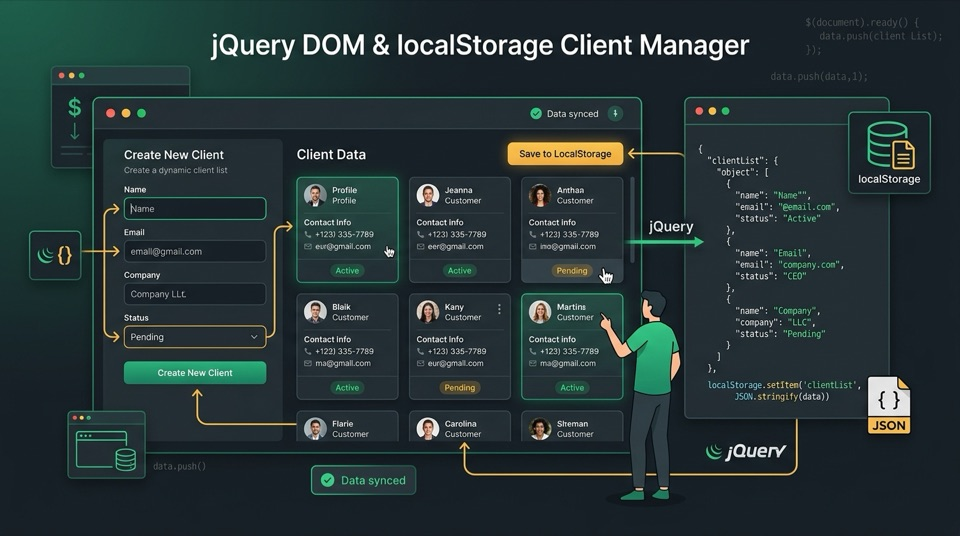
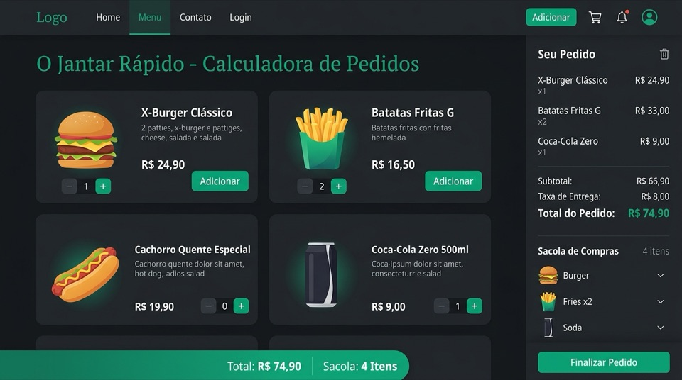
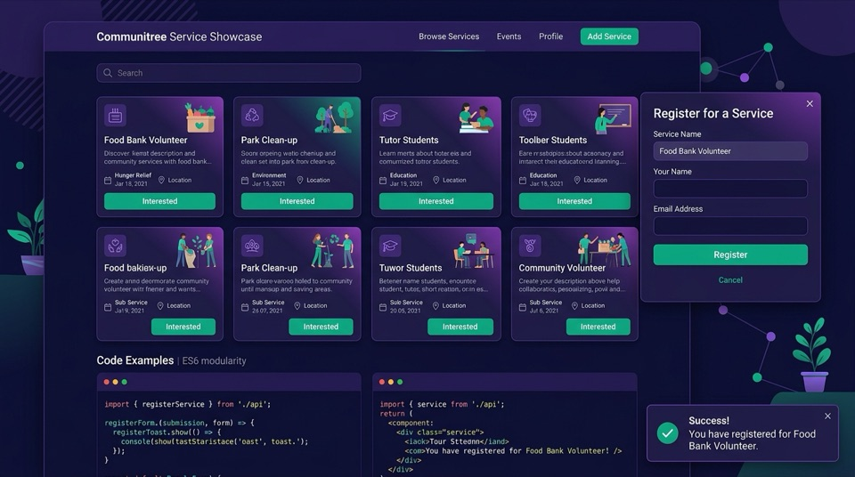
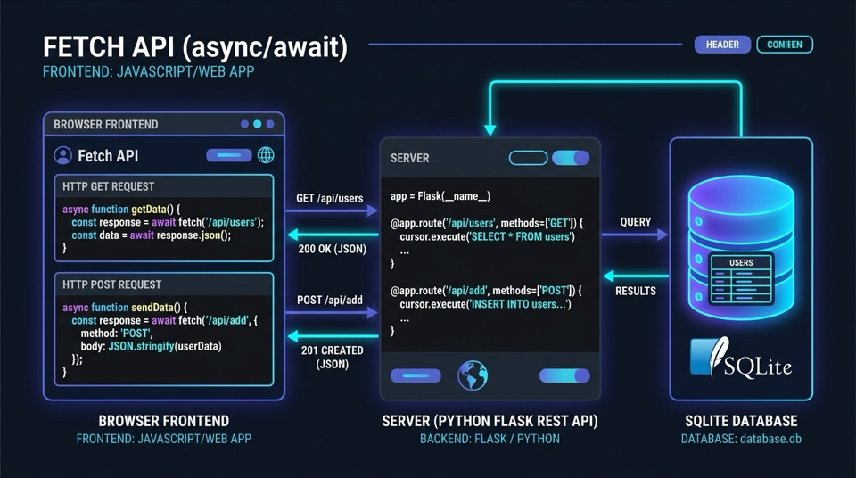
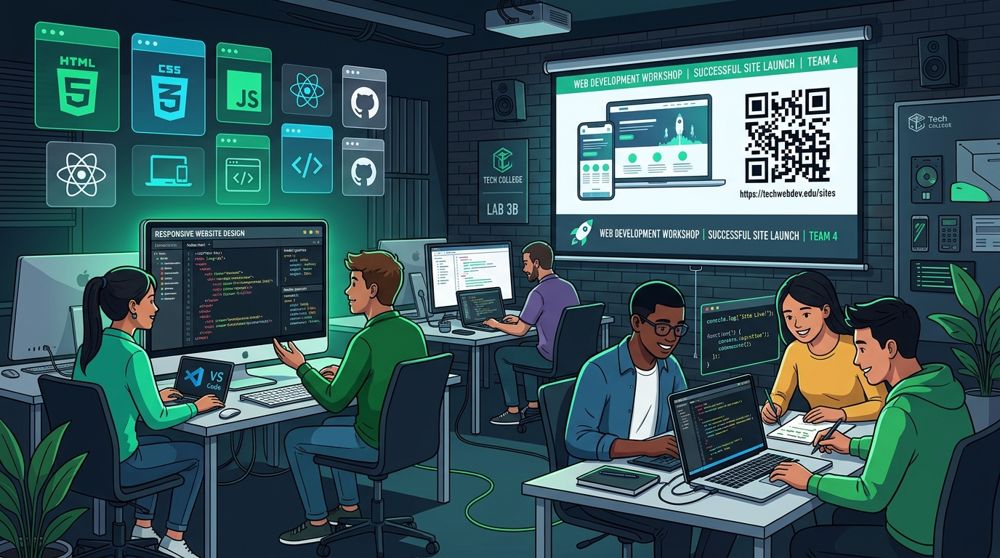

Caderno de Roteiros Práticos
Guias didáticos estruturados com ilustrações conceituais, arquitetura em camadas e práticas de laboratório:

Bootstrap 5 & Layout Responsivo
Fundamentos de design mobile-first e sistema de grid de 12 colunas para criação de interfaces fluidas, cards modulares e formulários estruturados.

jQuery, DOM & LocalStorage
Interatividade dinâmica no navegador, manipulação direta de elementos do DOM, escuta de eventos e persistência duradoura com Web Storage API.

Calculadora de Pedidos & Carrinho
Processamento aritmético em tempo real, formatação de moeda brasileira (R$) e controle do estado de compras com armazenamento seguro de rascunhos.

Vitrine Comunitária & Módulos ES6
Arquitetura modular em camadas separadas (services, views, utils), componentes modais Bootstrap 5 e fluxo CRUD com feedback por toast.

Fetch API & Backend Flask (SQLite)
Comunicação assíncrona cliente-servidor via APIs RESTful, envio e recebimento de JSON, persistência em banco relacional SQLite e fallback offline resiliente.

Frentes de Produção Cirúrgica das Oficinas Práticas (120 min)
Organização da turma em 8 frentes estratégicas (24 vagas) para produção dos kits instrucionais e condução das oficinas de desenvolvimento web na SNCT 2026.
Caderno Completo de Roteiros (prog-internet-2.pdf)
Documento unificado com a compilação completa de todos os roteiros práticos do semestre com paginação contínua.
Cronograma Semestral e Planejamento das 20 Aulas
Distribuição modular dos 20 encontros semanais (3h cada = 60h presenciais em laboratório) vinculados às atividades curriculares:
Módulo 1: Retomada & Transição Parte 1 (Bootstrap 5)
Transição ProgWeb 1 para ProgWeb 2, inclusão de CDN Bootstrap 5, Grid de 12 colunas, formulários estilizados, cards, badges e layout estático completo (Roteiro 01).
Módulo 1: Retomada & Transição Parte 2 (jQuery & LocalStorage)
Inclusão do jQuery, seletores avançados, eventos (submit, click), inserção dinâmica (.append()), animações e persistência com LocalStorage (Roteiro 02).
Persistência Local no Navegador & Calculadora de Pedidos (Roteiro 03)
Aplicação em tempo real de cálculos numéricos (parseFloat/parseInt com fallback || 0), switches e LocalStorage. Submissão ativa no SIGAA com 14 envios registrados (prazo presencial estendido para a próxima terça em aula).
Formulários Reativos, Modais & Validação Visual (Bootstrap 5)
Validação de formulários no cliente (.is-valid/.is-invalid), abertura programática de Modais interativos (bootstrap.Modal), Toasts não-bloqueantes e princípios de UX aplicados ao Roteiro 04.
Módulo 2: Arquitetura Modular & JavaScript ES6 Modules (Roteiro 04)
Separação profissional de responsabilidades em camadas no client-side: Serviços de Dados (services/), Renderizadores de Interface (views/) e Utilitários (utils/). Uso de import/export nativo, escopo estrito e desenvolvimento da Vitrine Comunitária de Serviços.
Padrões de Projeto no Client-Side & Refatoração da Vitrine
Consolidação da arquitetura modular, filtros dinâmicos por categoria, CRUD completo com LocalStorage e mentoria prática individualizada em laboratório.
Refatoração Modular Aplicada
Transição de scripts monolíticos para arquitetura limpa em ES6 Modules com mentoria prática individualizada em laboratório.
Módulo 3: Assincronismo & Backend RESTful em Flask (Roteiro 05)
Conceito de requisições assíncronas, Promises, async/await e inicialização do microbackend em Python Flask com banco de dados SQLite persistente (vitrine.db) e cabeçalhos CORS.
Integração Frontend-Backend com Fetch API (Roteiro 05)
Refatoração do vitrineService.js com a Fetch API nativa (GET, POST, DELETE), gravação direta no banco de dados SQLite e chaveamento inteligente para contingência no LocalStorage.
Tratamento Avançado de Erros e Feedbacks Visuais
Estados de carregamento (spinners), notificações toasts, alertas de falha de conexão e tratamento de códigos HTTP de resposta (404, 500).
Avaliação Teórica Única (A1 — Peso 25%)
Avaliação teórica individual sobre arquitetura modular ES6, assincronismo, protocolo HTTP e integração com APIs RESTful.
Módulo 4: Single Page Applications (SPAs)
Arquitetura de aplicações de página única, roteamento no lado do cliente via JavaScript sem recarregamento de página (Client-Side Routing).
Gerenciamento de Estado Global no Cliente
Padrões de gestão de estado reativo, sincronização entre componentes e persistência em memória durante a navegação.
Módulo 5: Ecossistemas Web Modernos (Node.js & npm)
Introdução ao ecossistema moderno de ferramentas, inicialização de pacotes, dependências de desenvolvimento e scripts de automação.
Ferramentas de Build \& Bundlers (Vite)
Configuração do ambiente de desenvolvimento rápido com Vite, Hot Module Replacement (HMR), minificação e variáveis de ambiente.
Lançamento do Projeto Integrador de Extensão (A3 — SNCT / COTB)
Definição dos temas com impacto comunitário e escolha da via extensionista (Minicursos na SNCT ou Resumo Expandido de Produto Web).
Desenvolvimento Guiado do Projeto Final em Laboratório
Mentoria técnica, integração do frontend modular com serviços web, persistência e validação dos fluxos de usuário.
Mentoria Avançada, Acessibilidade \& Testes de Usabilidade
Refatoração de código, testes de responsividade em múltiplos dispositivos, conformidade com acessibilidade e publicação no GitHub Pages.
Apresentação e Defesa do Projeto Integrador de Extensão (A3)
Bancas avaliativas com demonstração prática ao vivo da aplicação web hospedada no GitHub Pages e apresentação dos resultados da ação extensionista.
Encerramento do Semestre & Recuperação Paralela
Reavaliações orientadas, consolidação dos diários de classe no SIGAA e encerramento das atividades letivas.
Curricularização da Extensão Universitária (40 Horas)
Oficinas práticas presenciais na SNCT 2026 ministradas pelos estudantes para a comunidade externa no Câmpus Garopaba, integralizando 40h extensionistas (Meta 12.7 PNE, Resolução CNE/CES nº 07/2018 e PPC SPI).
Roteiro de Atividades Autônomas desta Semana (Ausência Docente em Sala)
Como nesta semana não haverá encontro presencial com o professor em sala, cada estudante e cada frente deve seguir os 3 passos obrigatórios abaixo utilizando o Roteiro Operacional em PDF da sua respectiva tarefa:
Candidaturas encerradas e trios das 8 frentes homologados. O trabalho prossegue com as equipes ativas na elaboração técnica.
Estruture a sala oficial da sua frente no Moodle (Curso 1 id=2663 / Curso 2 id=2664) com perfil de Professor.
No card da sua frente, registre o link de entrega (repositório GitHub ou sala Moodle) para homologação e revisão cruzada da Etapa 3.
Trilha de Execução das Etapas: Da Candidatura às Oficinas com a Comunidade
Candidaturas encerradas. Trios das 8 frentes consolidados e ativos.
Publicar rascunhos nas salas oficiais (id=2663 e 2664) e registrar links.
Conferir código, micro-roteiro e slides em par com as outras frentes.
Simulação completa: Curso 1 ministra para o Curso 2 e vice-versa.
Aplicação presencial com participantes externos, presenças e fotos.
Quadro de Frentes & Candidaturas da Turma (24 Vagas nos 2 Cursos)
0 / 24 vagas
Quadro de Frentes & Candidaturas da Turma
São 8 frentes cirúrgicas com 3 vagas cada, totalizando as 24 vagas para os 24 estudantes da turma. Conecte-se com seu login institucional do Google para assumir uma vaga ou atualizar o link de entrega da sua equipe.
Meu Primeiro Site no Ar (HTML5, CSS3 & GitHub Pages)
Escopo exclusivo das equipes do Curso 1: página pessoal/comercial com foto, bio, 3 cartões de destaques e botão direto de WhatsApp (wa.me).
- Sala no Moodle IFSC: Curso 1 — Meu Primeiro Site no Ar (chave
SNCT2026) - Pacote da Frente 2:
starter-kit-snct.zip(HTML + CSS com variáveis:root) - Frentes independentes: Didática C1, Starter Kit C1, Slides C1 e Monitoria C1
Painel Verde: Coleta Seletiva & Ecopontos de Garopaba
Escopo exclusivo das equipes do Curso 2: painel ambiental de Garopaba com botões de filtro por tipo de resíduo (.filter() em 32 linhas no js/app.js) e link direto para o Google Maps.
- Sala no Moodle IFSC: Curso 2 — Painel Verde Garopaba (chave
SNCT2026) - Pacote da Frente 2:
starter-kit-painel-verde.zip(HTML + CSS +js/app.js) - Frentes independentes: Didática C2, Starter Kit C2, Slides C2 e Monitoria C2
Meu Primeiro Site no Ar — Frentes Exclusivas do Curso 1
starter-kit-snct.zip
Painel Verde: Coleta Seletiva & Ecopontos — Frentes Exclusivas do Curso 2
starter-kit-painel-verde.zip
Guia Pedagógico de Produção dos Cursos (Pipeline de 6 Etapas, Dimensionamento & Checklists)
Guia Metodológico
Produção dos Minicursos da SNCT: como vamos construir os dois cursos
Procedimentos, formatos de material e o pipeline que todas as equipes seguem, do diagnóstico do público ao relatório final.
Pipeline de produção (6 etapas)
Cada etapa só começa quando a anterior tem o seu entregável pronto. Clique em uma etapa para ver o que fazer e o que entregar.
-
1 Conhecer o público Quem vem, o que já sabe e o que quer levar para casa
- Defina o perfil: idade, se já usou computador, se tem e-mail próprio.
- Escreva uma frase de resultado: “Ao sair, a pessoa terá…”.
- Liste os pré-requisitos reais (ex.: e-mail para criar conta no GitHub).
Entrega: ficha do público (meia página) -
2 Plano instrucional Objetivos, roteiro minuto a minuto e papéis da equipe
- No máximo 3 objetivos, todos verificáveis na tela do participante.
- Divida o tempo em blocos com um checkpoint no fim de cada um.
- Defina quem é instrutor, monitor, suporte e registro.
Entrega: plano instrucional aprovado pelo professor -
3 Produzir os materiais Roteiro do participante, slides e kit inicial de código
- Roteiro em PDF no padrão visual dos roteiros da UC (passos numerados, checkpoints, código completo).
- Slides curtos em HTML, publicados no GitHub Pages.
- Kit inicial no GitHub: pasta pronta para o participante começar sem digitar tudo do zero.
Entrega: links do roteiro, dos slides e do repositório -
4 Ensaio geral Uma equipe ministra para a outra, no laboratório, cronometrando
- Rode o roteiro inteiro numa máquina do laboratório, não no seu notebook.
- Anote onde os “participantes” travaram e quanto tempo cada bloco levou.
- Corrija o material e corte o que não coube no tempo.
Entrega: lista de ajustes feitos depois do ensaio -
5 Ministrar na SNCT Oficina presencial no laboratório do Câmpus Garopaba
- Chegue antes: máquinas ligadas, kit aberto, internet testada.
- Um monitor para cada 4 ou 5 participantes, circulando pelas bancadas.
- Siga o plano; se atrasar, pule o bônus, nunca o checkpoint.
Entrega: lista de presença e fotos da oficina -
6 Avaliar e relatar Satisfação do público, lições aprendidas e relatório extensionista
- Aplique o formulário de satisfação antes de o público sair.
- Reúna a equipe no mesmo dia: o que funcionou, o que mudar.
- Os dados alimentam o relatório e o resumo expandido (Modalidade 2).
Entrega: relatório da oficina com fotos e resultados
Formatos dos materiais
| Material | Formato | Onde fica |
|---|---|---|
| Plano instrucional | Documento (1–2 páginas) | Pasta da equipe |
| Roteiro do participante | PDF no padrão LaTeX da UC | Repositório + impresso |
| Slides | HTML + Bootstrap 5 | GitHub Pages |
| Kit inicial de código | Repositório GitHub | Link/QR code no roteiro |
| Presença e satisfação | Formulário on-line + lista impressa | Professor |
| Relatório da oficina | PDF com fotos e resultados | SIGAA |
Dimensionamento Cirúrgico: Oficina de 120 Minutos
Princípio fundamental: Zero telas em branco e zero instalações complexas. O participante da comunidade não perde tempo configurando ambientes; utiliza o starter kit no navegador e sai com o site ativo no smartphone.
- 00–15 min Acolhida & Demonstração: recepção da turma, alinhamento e exibição do site final funcionando via QR Code no celular.
- 15–35 min Bloco 1 (Desempacotamento): abertura do Starter Kit, customização de dados básicos (nome, bio, foto e cores no CSS).
- 35–70 min Bloco 2 (Componente Central): estruturação da área principal (seções e botão WhatsApp no Curso 1; lógica interativa no Curso 2).
- 70–95 min Bloco 3 (Deploy em Produção): criação do repositório no GitHub e ativação do GitHub Pages com URL pública.
- 95–110 min Bloco 4 (Acesso Mobile & QR Code): geração do QR Code do site publicado e validação prática em smartphones.
- 110–120 min Avaliação & Encerramento: preenchimento do formulário de satisfação de 3 perguntas e fotos oficiais da turma.
Papéis no Dia da Oficina
- Instrutor(a) de Projeção: conduz a narrativa no telão, dita o ritmo dos blocos e não avança sem os checkpoints.
- Monitores de Bancada: circulam pelas ilhas do laboratório destravando dúvidas pontuais sem assumir o teclado do aluno.
- Suporte Técnico & Lab: gerencia conectividade, máquinas reserva, credenciais de teste e o projetor.
- Registro & Certificação: controle rigoroso de presenças, auxílio com autorizações de imagem e fotos para o relatório da extensão.
4 Entregáveis Cirúrgicos Obrigatórios
- Micro-Roteiro A4 (máx. 4 páginas): impresso e em PDF, diagramado no padrão LaTeX da UC, com código 100% copiável.
- Starter Kit no GitHub: repositório base enxuto, testado em máquinas do laboratório, pronto para download ou fork em 1 clique.
- Slides-Guia (8 telas): apresentação limpa no navegador para projeção contínua com números de tela correspondentes ao roteiro.
- Plano B Offline: pen-drives preparados com o kit completo e navegadores portáteis caso a internet do laboratório oscile.
Checklist de Prontidão da Equipe
As marcações servem como guia tático de ensaio para cada equipe.
Diretrizes Curriculares da Extensão Universitária (Modalidades 1 e 2 • 40 Horas)
Regulamento PNE
Em conformidade com a Meta 12.7 do PNE, a Resolução CNE/CES nº 07/2018, as Resoluções CONSUP/IFSC nº 40/2016 e nº 61/2016 e o PPC de Sistemas para a Internet (Resolução CONSUP nº 30/2020), esta unidade curricular integraliza 40 horas de atividades extensionistas com interação dialógica transformadora com a sociedade.
Minicursos & Oficinas Práticas no IFSC
Proposição e condução de oficinas práticas presenciais (2h a 4h) no laboratório de informática do Câmpus Garopaba durante a Semana Nacional de Ciência e Tecnologia (SNCT). A turma ofertará duas oficinas práticas para a comunidade:
Meu Primeiro Site no Ar
Construção de página pessoal com HTML5 semântico e publicação instantânea e gratuita na web com GitHub Pages para compartilhar com a família e a comunidade.
Escolha do 2º Minicurso para a SNCT
Inspecionar opções e histórico de votos nominais arquivados
Resumo Expandido de Produto Web (SNCT & COTB)
Elaboração e submissão de um Relato de Experiência / Resumo Expandido (2 a 4 páginas) documentando o desenvolvimento e a validação de uma aplicação web extensionista.
Sugestões de Eixos Comunitários Locais:
- 🌊 Turismo Comunitário & Pesca: Catálogo e roteiro dos ranchos de pesca tradicional da Barra e patrimônio açoriano.
- 🐾 Causa Animal: Vitrine de acolhimento e adoção responsável de animais resgatados com formulário assíncrono.
- 🌾 Agricultura Familiar: Divulgação direta de colheitas semanais, feiras orgânicas e produtores locais.
- 🌿 Preservação Ambiental: Guia interativo de conservação de trilhas ecológicas, dunas e praias limpas.
- ♿ Acessibilidade Praiana: Mapeamento de rampas, esteiras acessíveis e cadeiras anfíbias nas praias do município.
Estrutura do Artigo (COTB / Mostra SNCT):
- Introdução & Contexto Comunitário (Problema real em Garopaba)
- Arquitetura da Solução Desenvolvida (Frontend Modular, Fetch, Persistência)
- Interação Dialógica & Testes com Usuários Reais da Comunidade
- Resultados Obtidos & Impacto Social da Aplicação
- Considerações Finais e Lições Aprendidas
Distribuição Detalhada da Carga Horária de Extensão (40 Horas)
Integralização 40h
Central de Demandas & Checkpoints Avaliativos
Gestão ágil de sprints, entregas de laboratório e checkpoints com avaliação formativa por rubricas para a turma:
Painel de Avaliações, Notas & Notificações
Gestão integrada de notas por rubricas, fechamento acadêmico e notificações aos estudantes por e-mail institucional (estilo Projeto Integrador):
Avaliação Teórica
Avaliação conceitual individual sobre ES6 Modules, manipulação do DOM, Fetch API assíncrona, HTTP REST, CORS e arquiteturas web.
Curso Ministrado na SNCT
Curricularização da Extensão: planejamento, produção didática e ministração de minicurso/oficina prática durante a Semana Nacional de C&T.
Site com Fetch & Flask
Implementação full-stack desacoplada (Vitrine Comunitária), microbackend Python Flask, SQLite e contingência offline.
Demais Entregas Agrupadas
Roteiros práticos semanais de laboratório (Roteiros 1 a 8), pontualidade, engajamento e publicações no GitHub Pages.
Quadro Consolidado de Avaliações Registradas
Notas atribuídas às equipes por demanda com histórico de pareceres formativos e disparo de notificações:
Roster de Estudantes & Notificações por E-mail
Gerencie a vinculação de e-mails institucionais às equipes para envio automático de devolutivas e comunicados:
Importação em Lote da Lista da Turma (SIGAA)
Cole uma linha por estudante no formato: Nome Completo; Nome ou Número da Equipe; email@aluno.ifsc.edu.br
Planilha Consolidada de Notas Finais
Cálculo individualizado da média ponderada com arredondamento acadêmico oficial:
Matriz Oficial de Rubricas de Avaliação Formativa (ProgWeb 2)
Critérios estruturados em 4 dimensões (0.0 a 2.5 pontos cada), aplicados nos checkpoints e no projeto final:
| Dimensão Técnica | Insuficiente (0,5 pt) | Em Desenvolvimento (1,2 pt) | Conforme (2,0 pt) | Excelente (2,5 pt) |
|---|---|---|---|---|
| 1. Arquitetura Modular ES6 & Organização | Código monolítico em único script; variáveis globais sem escopo; pastas desorganizadas. | Separação parcial em módulos; export/import com dependências circulares ou escopos misturados. | Módulos ES6 bem estruturados em camadas (dados, serviços, renderização); raiz de arquivos limpa. | Arquitetura modular de alto nível, desacoplada, imports nomeados limpos, comentários e manutenibilidade exemplar. |
| 2. Manipulação do DOM, Forms & Reatividade | Sem validação de formulários; erros de NaN em cálculos numéricos; DOM estático ou com bugs. | Manipulação funcional do DOM, porém com cálculos inconsistentes sem proteção defensiva contra NaN. | Eventos reativos (change/input), parsing numérico defensivo (parseFloat/parseInt) e cálculos em tempo real. | Reatividade fluida com debounce/feedback dinâmico, sanitização rigorosa de inputs e formatação monetária (Intl). |
| 3. Assincronismo, Fetch API & Microback-end | Sem consumo de dados assíncronos ou falhas sistemáticas de CORS/404 não tratadas. | Fetch API básica sem blocos try/catch ou sem tratamento de status HTTP (4xx / 5xx) no cliente. | Consumo assíncrono correto com async/await, conversão json(), tratamento de rotas e try/catch seguro. | Integração assíncrona robusta, tratamento refinado de erros na UI, fallbacks elegantes e rotas RESTful integradas. |
| 4. UX, Feedback Visual & Deploy GitHub Pages | Layout quebrado em mobile; ausência de feedback de carregamento; sem deploy público no GitHub Pages. | Layout responsivo básico; feedback visual ausente; deploy com links quebrados ou sem .nojekyll. | Bootstrap 5 responsivo, mobile-first, alerts/spinners de feedback e deploy 100% ativo no GitHub Pages. | Design refinado, contraste acessível, modais/toasts fluidos, zero erros de console e deploy live impecável. |
Ementa Oficial & Referências Bibliográficas (PPC 30/2020)
Componente Curricular do Curso Superior de Tecnologia em Sistemas para a Internet (IFSC Câmpus Garopaba):
Ementa do Componente Curricular:
Conceitos avançados de desenvolvimento frontend client-side; Inclusão e integração de bibliotecas e frameworks de interface (Bootstrap 5, jQuery); Arquitetura de código JavaScript modular utilizando ES6 Modules (import/export); Manipulação avançada do DOM e formulários reativos com validação visual no cliente; Programação assíncrona avançada com Promises, async/await e consumo de APIs RESTful via Fetch API; Conceitos e arquitetura de Single Page Applications (SPAs) com roteamento client-side sem recarregamento de página; Gerenciamento de Estado no Cliente e armazenamento persistente via Web Storage API (localStorage e sessionStorage); Introdução às ferramentas modernas de empacotamento, build e ecossistemas frontend (Node.js, npm, Vite); Versionamento, publicação e hospedagem de aplicações web profissionais com Git, GitHub e GitHub Pages; Desenvolvimento de Projeto Prático Integrador de Extensão.
Bibliografia Básica
- FLANAGAN, David. JavaScript: O Guia Definitivo. 7. ed. Porto Alegre: Bookman, 2021.
- DUCKETT, Jon. HTML e CSS: projete e construa websites. Rio de Janeiro: Alta Books, 2014.
- MOZILLA FOUNDATION. MDN Web Docs: HTML, CSS e JavaScript. Disponível em: developer.mozilla.org.
Bibliografia Complementar
- FREEMAN, Adam. Pro Bootstrap 5: Responsive Web Development. New York: Apress, 2021.
- W3SCHOOLS. Bootstrap 5 & JavaScript Tutorials. Disponível em: w3schools.com.
- VITE CORE TEAM. Vite: Next Generation Frontend Tooling. Disponível em: vitejs.dev.
- BOOTSTRAP TEAM. Bootstrap 5 Official Documentation. Disponível em: getbootstrap.com.
- JQUERY FOUNDATION. jQuery Official API Reference. Disponível em: api.jquery.com.
Central de Tarefas e Atividades no SIGAA
Painel oficial de acompanhamento das tarefas individuais de laboratório publicadas no ambiente acadêmico do IFSC, prazos e controle de entregas:
| Título | Período de Entrega | Possui Nota | Envios | Ações & Guia |
|---|---|---|---|---|
|
Atividade 1: Calculadora de Lanches
Atividade para aplicação de lanchonete.
Vinculada ao Roteiro Prático 03
Prazo Estendido em Sala
|
de 22/09/2026 às 00h00
a 01/10/2026 às 23h59
*Prorrogado para a próxima terça-feira em aula
|
Não
Formativa A2
|
14
entregues
|
|
|
Atividade 2: Vitrine Comunitária de Serviços
Aplicação modular profissional (ES6 Modules, LocalStorage, Modais & Toasts).
Módulo 2 / Roteiro Prático 04
Em desenvolvimento em sala
|
Abertura programada no SIGAA
Submissão via link GitHub + GitHub Pages
|
Não
Formativa A2
|
0
aguardando
|
|
|
Práticas Iniciais: Bootstrap 5 & jQuery DOM
Roteiro 01 (Grid 12 Colunas) & Roteiro 02 (Eventos, Animações e LocalStorage).
|
Realizadas Presencialmente
Práticas guiadas em laboratório
|
Não
Nivelamento
|
100%
turma
|
| Requisito de Envio | Especificação Técnica & Conteúdo | Formato Esperado | Critério no SIGAA |
|---|---|---|---|
|
1. Repositório no GitHub
Código-fonte da atividade prática
|
Estrutura organizada de arquivos com raiz limpa (
index.html, pastas css/, js/).Histórico transparente de commits com mensagens em português documentando a evolução do desenvolvimento.
|
https://github.com/usuario/repo |
Autoria & Git
Versionamento
|
|
2. Deploy no GitHub Pages
Aplicação publicada ao vivo
|
Aplicação web rodando no navegador sem páginas 404 de assets ou erros de script no console.
Hospedagem ativa em produção, permitindo teste imediato das interações pelo professor e pelos pares.
|
https://usuario.github.io/repo/ |
Execução Live
Compatibilidade
|
|
3. Avaliação Formativa A2
Indicação "Possui Nota: Não"
|
A menção "Possui Nota: Não" refere-se ao modelo continuado de avaliação formativa por rubricas em sala de aula.
Cada prática pontua na composição da Avaliação A2 (35% da Média Final), consolidada no encerramento do módulo.
|
35% da Média Final |
Formativa A2
Diário Acadêmico
|
| Critério de Aceite | Implementação Exigida (Roteiro 03) | Validação Técnica | Ações & Teste |
|---|---|---|---|
|
1. Cálculo em Tempo Real
Reatividade e escuta de eventos
|
Subtotais, adicionais (queijo, molhos, acompanhamentos) e total geral atualizados instantaneamente.
Escuta dinâmica de formulário implementada com
.on('input change') sem recarregar a tela. |
Obrigatório
Sem recarregamento
|
|
|
2. Robustez Numérica
Tratamento defensivo contra NaN
|
Conversão segura de valores monetários com
parseFloat() e parseInt().Aplicação de fallback defensivo (
|| 0) impedindo que campos vazios ou caracteres inválidos quebrem o cálculo. |
Obrigatório
Tratamento || 0
|
|
|
3. Formatação Monetária
Padrão Real Brasileiro (BRL)
|
Exibição de valores monetários formatados no padrão brasileiro (
R$ X,XX).Uso de função utilitária com
Intl.NumberFormat ou .toFixed(2).replace('.', ','). |
Obrigatório
Moeda R$
|
|
|
4. Persistência Offline
Web Storage API (localStorage)
|
Salvamento automático do rascunho do pedido no navegador do cliente via
localStorage.Restauração imediata dos dados selecionados ao recarregar ou reabrir a aplicação.
|
Obrigatório
Rascunho salvo
|
Período de Entrega no SIGAA: de 22/09/2026 às 00h00 a 01/10/2026 às 23h59.
Prorrogação Presencial: Apresentação e entrega flexibilizada até a próxima terça-feira em horário de aula.
Status Atual da Turma: 14 envios confirmados.
Formato de Envio: Link do repositório no GitHub + Link da aplicação publicada no GitHub Pages.
Prezados(as) estudantes,
Para consolidar os conteúdos de interface responsiva (Bootstrap 5), manipulação dinâmica de formulários e cálculos numéricos em tempo real (jQuery com parseFloat/parseInt defensivo contra NaN) e persistência duradoura no navegador (LocalStorage), está disponível a atividade prática do Roteiro 03.
🔗 Materiais de Apoio e Consulta:
• Guia Completo em PDF: https://chameoandre.github.io/CST-Sistemas-para-internet-programacao-para-internet-2/roteiro-3/main.pdf
• Demonstração Interativa: https://chameoandre.github.io/CST-Sistemas-para-internet-programacao-para-internet-2/roteiro-3/exercicio-roteiro3/index.html
• Portal da Disciplina: https://chameoandre.github.io/CST-Sistemas-para-internet-programacao-para-internet-2/
📌 Critérios de Entrega:
1. Cálculo automático de subtotais, adicionais e total geral reagindo em tempo real (.on('change') e .on('input'));
2. Tratamento de valores com || 0 e formatação monetária em Real (R$ X,XX);
3. Armazenamento e restauração do rascunho do pedido via localStorage;
4. Envio via link do GitHub + GitHub Pages em funcionamento.
| Material / Documento | Descrição do Conteúdo | URL Pública GitHub Pages | Copiar |
|---|---|---|---|
| Roteiro 01 (PDF) | Bootstrap 5, Grid System 12 colunas e layout responsivo mobile-first. | .../roteiro-1/main.pdf | |
| Roteiro 02 (PDF) | jQuery, manipulação dinâmica do DOM e persistência com LocalStorage. | .../roteiro-2/main.pdf | |
| Roteiro 03 (PDF) | Calculadora de Pedidos & Carrinho (Atividade 1 no SIGAA). | .../roteiro-3/main.pdf | |
| Roteiro 04 (PDF) | Vitrine Comunitária & ES6 Modules profissional em camadas. | .../roteiro-4/main.pdf | |
| Roteiro 05 - Parte 1 (PDF) | Assincronismo, Fetch API, Teoria Flask & Mini-Exemplos Práticos. | .../roteiro-5/main.pdf | |
| Roteiro 05 - Parte 2 (PDF) | Tarefa Guiada: Refatoração da Vitrine Comercial (Flask, SQLite & Fallback). | .../roteiro-5/tarefa-guiada.pdf | |
| Plano de Ensino | Documento oficial com ementa, cronograma das 20 aulas e bibliografia PPC. | .../plano_de_ensino.pdf |
Área Docente: Controle Administrativo & Comunicação via Demandas
Acompanhe em tempo real o andamento separado do Curso 1 e do Curso 2 (Painel Verde), gerencie alocações dos 24 estudantes e envie demandas/comunicados diretos para toda a turma, cursos, grupos ou alunos individuais.